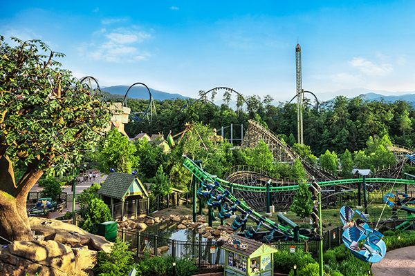
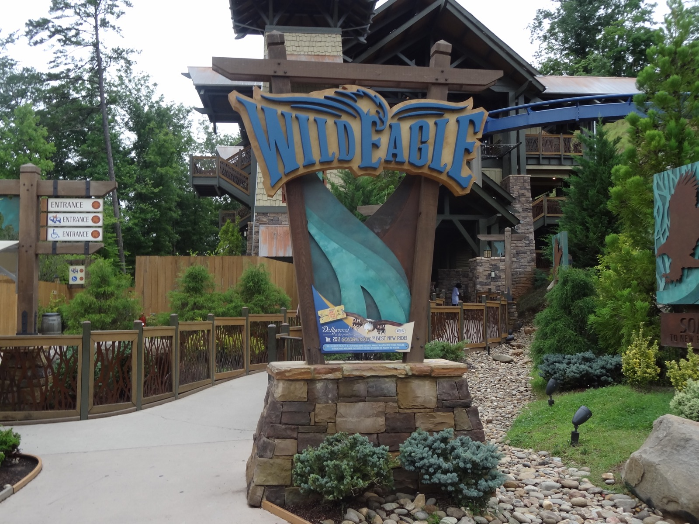
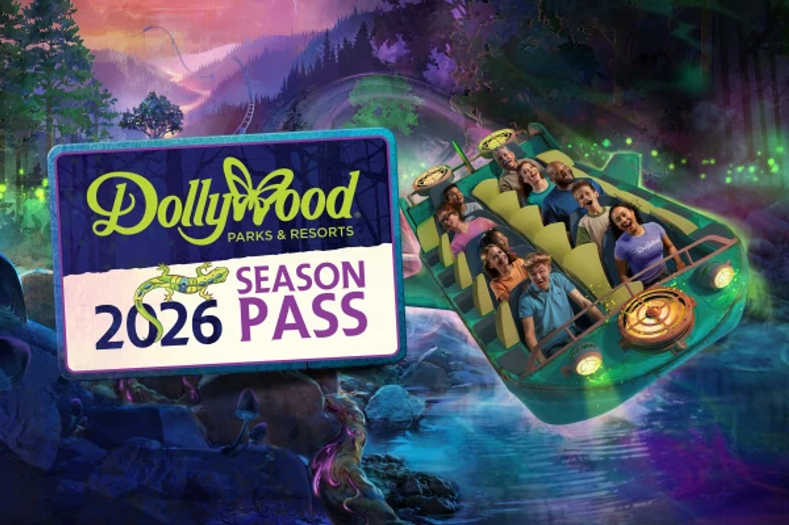

Date-specific
Pick-a-day tickets
Use these when the park day is locked to the resort reservation. Dollywood says the savings vary by day.
View Dollywood tickets →Dollywood Trip Planning
Outdoor Resorts Gatlinburg gives families a quieter East Parkway RV camping base for Dollywood days, with a practical route toward the park that can avoid the worst Parkway traffic getting in and out of Pigeon Forge.

Why Stay Here
Dollywood is in Pigeon Forge, at 2700 Dollywood Parks Blvd. Outdoor Resorts Gatlinburg is an RV resort at 4229 East Parkway, on the Gatlinburg side of the trip. The night is an RV night: a furnished rental or your own camper on an owner lot, with room to cook and reset after the park. Tent camping is not offered.
Distance and drive
Dollywood's directions say the park is less than 10 miles from the heart of Gatlinburg: US-441 north, then Dollywood Lane / Veterans Boulevard. That start is downtown. The resort is east of downtown on East Parkway, about 10 minutes from town, so add that leg. A mapped drive from 4229 East Parkway comes out around 19 to 22 miles and about 45 minutes with clear roads. A summer Saturday, a festival morning, or a Christmas evening can make the Parkway version much longer. Check a live map before you leave.
Go west on East Parkway through Gatlinburg, then north on US-441, the Spur, and the Pigeon Forge Parkway. Dollywood Lane and Veterans Boulevard (TN-449) lead toward McCarter Hollow Road. This is the route Dollywood prints for Gatlinburg drivers, and it is the one the whole town is using when the strip is full.
The other mapped option stays east of downtown: East Parkway to Webb Creek Road, Pittman Center Road (TN-416), Jayell Road, and McCarter Hollow Road. Dollywood's Sevierville directions also finish on McCarter Hollow, so you approach from the Veterans Boulevard side. Clear-road time is similar. Take this route when a live map shows the Parkway stopped and these roads moving, including on the way home after closing. Roads close and get repaved. Dollywood's directions cover the last turn. The live map covers the traffic.
Parking
You sleep at the resort. Dollywood parking is daytime only. The parking page says overnight parking is not available at any Dollywood park, and RV parking is not for overnight parking or camping.
Most furnished rentals should do this. Drive a car. Dollywood's parking page currently lists general parking at $25 a vehicle, with trams from lots A through E, and preferred parking at $55 for the day you select. Gold and Diamond passes include general parking under the rules printed there, and that page says the first parking fee for those passholders is non-refundable. Confirm the number on the parking page the week you go.
If the RV is your only vehicle, the same page lists oversized and RV parking at $30 in Lot F, a short walk to the front gate. Come back to the resort at closing. Same-day re-entry depends on space and a receipt. Pets are a separate plan: Dollywood allows animals only as ADA service animals, with Doggywood noted for dogs that have updated vaccinations. Resort pet rules are in the stay guide and on your listing.

2026 park calendar
Dollywood's 41st season opened March 13, 2026. The old theme-park calendar address no longer works. Use Dollywood's calendar before you book resort nights, and the festival page for what is playing. Dollywood published these 2026 windows:
For that Christmas run, Dollywood published hours of 10 a.m. to 9 p.m. on most nights, with 9 a.m. to 10 p.m. on November 27 and 28 and again December 26 through January 3. Hours can change. The lights mean many cars leave after dark, so the drive back to East Parkway is a different problem than a summer afternoon. Splash Country is a separate water park. Confirm its date on Dollywood's site if you want a water day in the same trip.
RV guests
Spend a night at the resort before the park day. The RV resort guide explains the two bookings: a furnished RV, or a lot only if the camper is yours.

2026 headline ride
Dollywood describes NightFlight Expedition as its largest attraction investment, more than $50 million, and as the world's first indoor family hybrid coaster and whitewater river raft ride. It opened for the 2026 season in Wildwood Grove.
The ride page puts it in a 44,000-square-foot building and lists a 5 1/2-minute ride with a 39-inch minimum. On a wet or cold day it is the indoor anchor. Confirm height and whether it is running that morning.
Tickets
Tickets, passes, and parking belong on Dollywood's site. Prices move by date. This page can help you plan the resort night. It does not quote a ticket price.
Date-specific
Use these when the park day is locked to the resort reservation. Dollywood says the savings vary by day.
View Dollywood tickets →Flexible
These cost more and help when weather or a tournament schedule might move the Dollywood day inside the same season.
Compare ticket types →Multiple visits
Compare passes when you expect more than one park day, and read the parking add-on at the same time.
See season passes →Questions
A mapped drive from 4229 East Parkway to 2700 Dollywood Parks Blvd is around 19 to 22 miles, about 45 minutes before Parkway traffic. Dollywood's downtown figure is shorter because the resort sits east of town. Check a live map.
No. Dollywood says RV parking is not for overnight stays or camping, and overnight parking is not offered at the parks. Sleep at the resort.
Compare US-441 through Gatlinburg with the east-side roads: Webb Creek Road, Pittman Center Road, Jayell Road, and McCarter Hollow Road. Miles are similar in clear traffic. Use the east-side route when the Parkway is backed up.
It is an RV resort stay, either a furnished RV or a lot for your own camper. Book on the rentals page and confirm details in the stay guide. This page is not Dollywood and not the official resort site.
Buy tickets, passes, and parking from Dollywood. Check the Dollywood calendar before you lock resort nights. This directory does not sell tickets.
No. Tent camping is not offered. The stay is an RV rental, a park model, or a rentable RV lot.